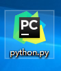

123412431234123re aliquam.
当然是以Hello World！来开始了。
我们可以用IDE，脚本或者在cmd下进行Python的交互来进行操作。
按 Win+R 键，输入 cmd 调出命令提示符，输入 python敲回车。
输入print('Hello World!')
由于我们在写代码时需要不断更改，所以我们需要更加灵活的方式。
创建一个文件，命名为python.py
由于我是有IDE的所以如果长得不一样也没关系。
右键用记事本打开该文件，并输入 print('Hello World!') 保存
在命令提示行下跳转至python.exe文件的路径下，并输入python python.py
目前有许多不同的软件编辑器可以使用：Sublime Text(免费), PyCharm(学生免费), NotePad++(免费).都可以使用，我用过前两个感觉Sublime更加轻便些，不过之后用过PyCharm后还是更喜欢PyCharme.本教程也会以PyCharm为主。


我们需要将IDE的解释器和我们安装的Python连接才可以正常使用。
打开设置
在解释器一项中将路径设置为之前安装Python的路径./python.exe。
图中用蓝色圈出的绿色加号是引入模块用的。

在新建的Project内创建一个Python的文件就可以开始练习了。
输入相应的内容，右键RUN。
之后就可以看到结果了。
123412431234123re aliquam.

犯得上法发到付 m.

12312435145146orper dolore aliquam.
如果大家有什么建议或者建议请及时联系我我才能为大家做出更好的教程